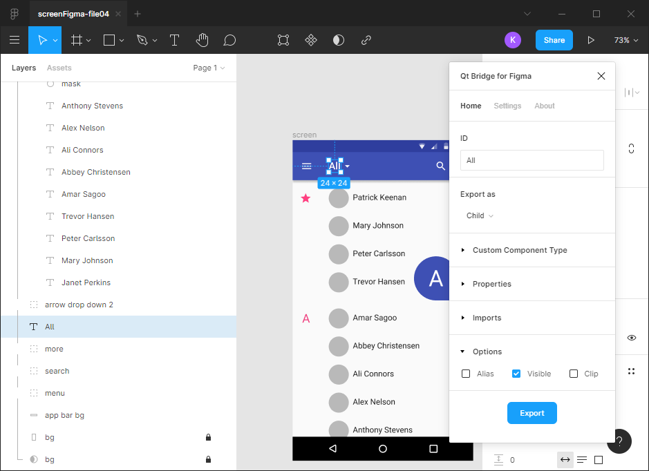

Exporting Designs from Figma
You can use Qt Bridge for Figma to export designs from Figma to a .qtbridge archive that you can import to projects in Qt Design Studio.

The following topics describe setting up and using Qt Bridge for Figma:
- Setting Up Qt Bridge for Figma
You must install Figma and the Qt Bridge for Figma export tool before you can use the tool to export designs.
- Using Qt Bridge for Figma
To get the best results when you use Qt Bridge for Figma to export designs from Figma, you should follow the guidelines for working with Figma and organizing your assets.